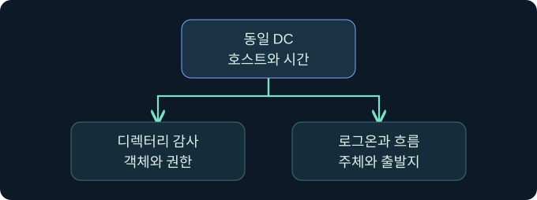
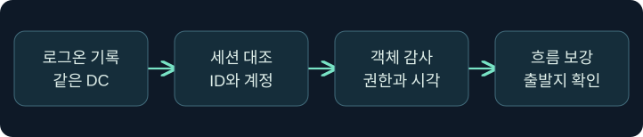
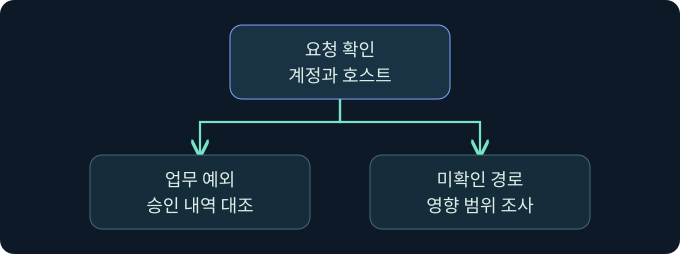

DCSync 감사 상관관계와 노출 판단
디렉터리 접근·로그온·네트워크 기록을 연결합니다.
1. 단일 경보에서 복제 요청의 맥락으로 넘어갑니다
가상의 SOC에서 서부 DC의 디렉터리 객체 접근 경보가 들어옵니다. 같은 시간에 정상 동기화도 있었습니다. 요청자, 출발지, 사용 권한과 업무 승인을 대조해야 두 경우를 구분할 수 있습니다. 실제 환경에서 복제 요청이나 인증 자료 조회는 수행하지 않았습니다.

2. 4662가 기록되는 조건을 이해합니다
4662는 디렉터리 객체 작업의 감사 이벤트입니다. Directory Service Access 감사 정책과 객체의 SACL 및 작업에 맞는 감사 조건이 필요합니다. 어느 DC에서 성공 또는 실패 감사가 나왔는지, 해당 시간의 수집 범위가 어떻게 되는지 확인합니다. 이벤트의 부재는 그 조건을 점검하기 전까지 활동 부재를 입증하지 못합니다.
3. 접근 유형과 권한을 함께 읽습니다
| 필드 | 답할 수 있는 질문 | 해석할 때 주의할 점 |
|---|---|---|
| Subject 및 Logon ID | 누가 작업했나요? | 같은 DC의 로그온 기록과 연결 |
| Object Name 및 Object Type | 어느 객체의 작업인가요? | 도메인 컨텍스트와 대조 |
| Access Mask | 어떤 접근 유형인가요? | Control Access의 값은 0x100 |
| Properties | 어떤 권한이나 속성인가요? | 복제 관련 권한인지 스키마 정의와 대조 |
Control Access는 여러 확장 권한에 쓰입니다. 0x100만으로 복제를 확정하지 않습니다. Properties의 식별자나 변환된 권한 이름을 확인하고, 성공 감사가 반환 자료의 내용을 보여 주는지 구분합니다.
4. 인증 기록을 같은 DC에서 연결합니다

4662의 Subject Logon ID를 같은 DC의 4624에서 새 로그온 ID와 대조합니다. 시각과 계정도 함께 읽습니다. 로그온 ID는 다른 호스트에 그대로 적용할 수 있는 전역 식별자가 아닙니다. 인증은 작업보다 먼저 발생할 수 있고 출발 주소가 비거나 중계 주소일 수 있습니다. 이벤트가 여러 개면 세션의 시간 범위와 흐름 자료로 후보를 좁힙니다.
5. 네트워크 관측과 권한 변경을 보강 증거로 씁니다
승인된 센서에서 DRS RPC의 인터페이스와 작업을 확인할 수 있다면 출발지, 목적지, 관측 시간을 대조합니다. 일반 RPC 포트만으로는 디렉터리 복제를 확인할 수 없습니다. 암호화와 센서 위치에 따라 세부 동작이 보이지 않을 수 있습니다. 권한 변경 감사가 있다면 사건 이전에 누가 어떤 경로로 접근 능력을 얻었는지 검토하되 실제 요청의 증거와 따로 기록합니다.
6. 공식 콘솔에서 관측 문맥을 구분합니다
실제 화면 150: Fortra Beacon Console
Fortra 콘솔 안내의 공식 일반 화면입니다. 2026년 11월 10일 안내서를 확인했으며 설치 버전에 따라 배치가 달라질 수 있습니다. Cobalt Strike → Visualization → Session Table → 가상 LAB-REVIEW06 우클릭 → Interact에서 하단 입력 줄에 getuid를 넣고 Enter를 누르는 미실행 예입니다. 선택한 세션의 보고 문맥을 확인하기 위한 값입니다. 저장 없이 위쪽 반환을 세션과 대조합니다. 이번 반환 및 실제 복제 감사 사진은 확보하지 못했습니다.
7. 저장된 로그의 필드를 확인합니다
Event Viewer → Action → Open Saved Log에서 가상 DC의 승인된 보안 로그를 선택하고 Open을 누르는 미실행 예입니다. Filter Current Log의 이벤트 ID 칸에 4662,4624를 넣고 OK를 누릅니다. 접근과 인증을 함께 검토하기 위한 값입니다. 원본 저장 없이 Details → XML View에서 컴퓨터, 로그온 ID, 접근 권한과 시각을 대조합니다. 이번 필터 창과 가상 결과 사진은 확보하지 못했습니다. Microsoft 이벤트 4662 안내
8. 정상 기준선과 다른 조건을 비교합니다

| 가상 관측 | 잠정 결론 | 다음 확인 |
|---|---|---|
| 알려진 DC 쌍, 정기 시간대 | 정상 복제 후보 | 토폴로지와 변경 기록 |
| 비DC, 등록된 동기화 계정 | 정상 예외 후보 | 실제 호스트와 승인 범위 |
| 비DC, 신규 권한, 예상 밖 시간 | 우선 조사할 요청 | 권한 변경, 인증, 처리 범위 |
| DRS 흐름만 관측 | 네트워크 단서 | SACL, 수집 상태, DC 기록 |
9. 사고 대응에 전달할 근거를 정리합니다
요청한 주체와 경로, 권한 변경 시각, 영향받을 수 있는 도메인과 미확인 증거를 기록합니다. 기존 로그와 네트워크 메타데이터를 보존하고 담당자가 실제 노출 범위를 판단할 수 있도록 요청 성공 여부와 반환 자료의 확인 여부를 나눕니다. 이 강의는 자격 증명을 수집하거나 변경하는 작업을 포함하지 않습니다.
10. 복습과 즉시 해설
복습 1. 4662는 DCSync 전용인가요?
해설: 디렉터리 객체 감사입니다. 권한과 주체를 대조합니다.
복습 2. 4662가 없으면 요청도 없었나요?
해설: 감사 정책, SACL과 수집 범위를 먼저 확인합니다.
복습 3. 0x100이면 복제인가요?
해설: 접근 유형입니다. Properties와 객체를 함께 봅니다.
복습 4. 로그온 ID를 여러 DC에서 그대로 비교하나요?
해설: 같은 컴퓨터의 로그온과 연결합니다.
복습 5. 일반 RPC 트래픽은 복제의 증거인가요?
해설: 가능한 경우 인터페이스와 작업을 대조합니다.
복습 6. 비DC는 모두 악성으로 분류하나요?
해설: 승인된 예외와 실제 호스트·계정을 확인합니다.
복습 7. 권한 변경이 실제 복제를 보여 주나요?
해설: 구성 변화의 단서입니다. 요청과 처리 자료는 별도입니다.
복습 8. 성공 감사로 반환된 자료를 확인할 수 있나요?
해설: 감사 범위를 읽고 반환이나 후속 사용을 별도로 조사합니다.
11. 공식 자료와 확인 범위
2026년 11월 10일 공식 자료를 확인했습니다. 제품 실행, 감사 설정 변경, 복제와 인증 자료 수집은 미실행입니다.